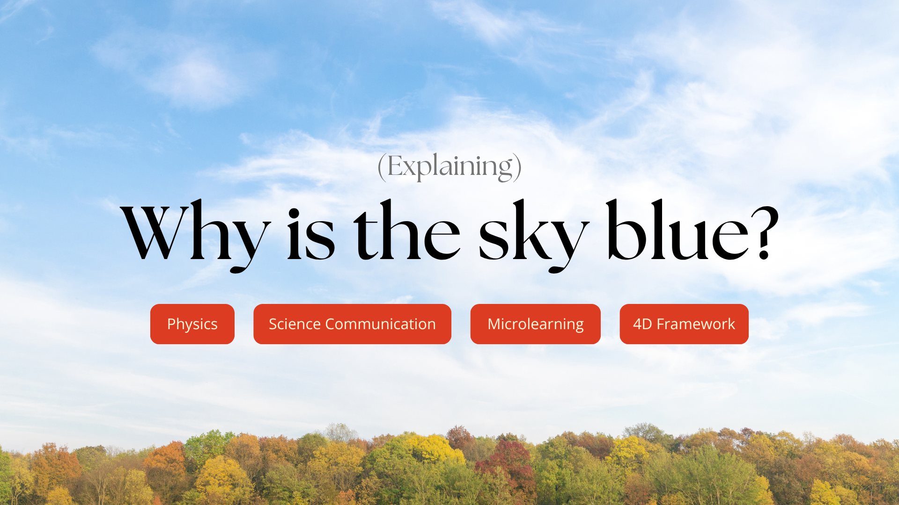
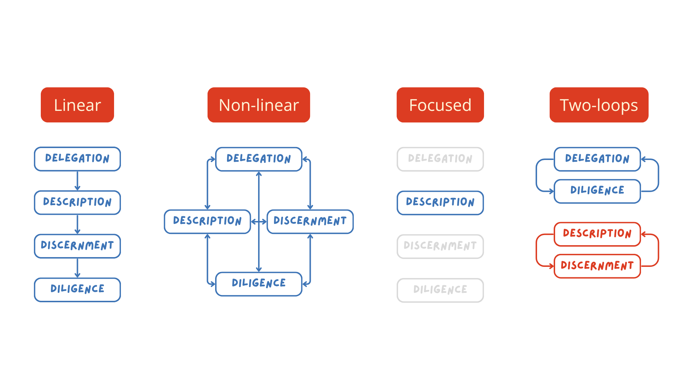
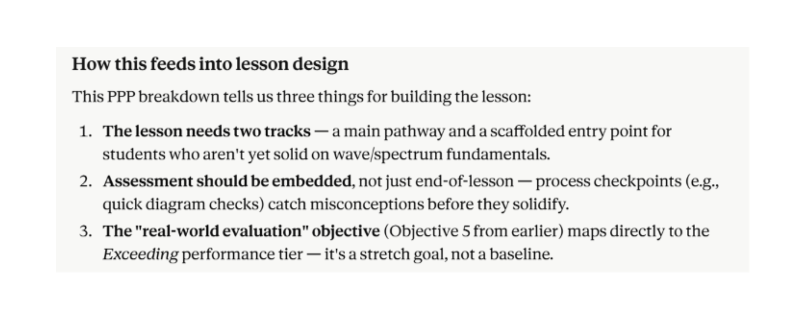
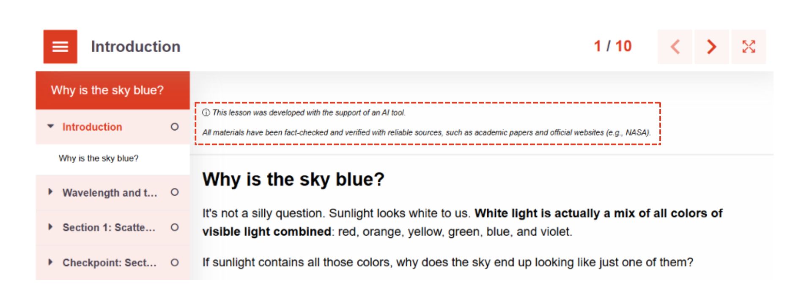

(Explaining)
Why is the sky blue?

Rethinking the question
AI has transformed the way people work across sectors. Education is no exception. The question is no longer, "How do we limit AI usage in learning?" But rather: "How can we effectively integrate AI into learning?"
The 4D Framework
This case study focuses on discussing AI in learning design from an educator's perspective.
With AI, creating learning materials can take just minutes. Does that mean educators play no role anymore? No. However, AI does change how educators design learning experiences. This is where the 4D Framework is especially helpful.
Dakan, R., Feller, J., & Anthropic. (2025). AI fluency: Framework and foundations. National Resource Hub. Read the framework.
There are four approaches to applying the 4D Framework: linear, non-linear, focused, and two-loops.

In this case study, I apply the linear approach — Delegation → Description → Discernment → Diligence — to create learning materials about a physics concept, for high school students (15–18), using Claude (Sonnet 4.6) by Anthropic.
1. Delegation
My goal is to teach a group of high school students the physics of sky colors. There are several generative AIs I could use, but I prefer using Claude. It lets me organize my projects into different chats and its outputs consistently support higher-order thinking.
Furthermore, I leveraged AI for the lesson development by dividing tasks as follows:
| AI | Indah |
|---|---|
| Outlining order of lessons | Evaluating and finalizing order of lessons |
| Drafting the lesson materials | Fact-checking and transforming drafts into lessons using authoring tools |
| Grading rubric creation | Evaluating and adjusting the rubric to ensure relevancy |
| Assessment plan | Evaluating and realizing assessment plan |
2. Description
After delegating some tasks, I also asked Claude to describe the key metrics for understanding the physics of sky colors for high school students. In this step, I'm using the Product-Process-Performance framework to assess its output.

3. Discernment
Once the output is available, discernment is necessary. As an example, one issue I see is that AI still struggles with content-platform alignment. AI can generate many great learning design ideas (sometimes even ones I hadn't considered!). However, not all suggestions can be turned into actual learning activities, mostly due to limitations of authoring tool features. Additionally, decisions on cognitive load of a lesson often need further human input.
As an example, for Product, Claude suggested three pieces of evidence of learning. Whether this can be applied as is depends on factors like platform features and pedagogical capacity. For this lesson, I'll focus on the "what if" analysis and use it as the final assessment.

Following up on the Claude output, here are a few points I considered:
- Claude suggested two lesson outlines to help students struggling with advanced topics. While this could be helpful, it is inefficient. So, I decided to stick with one lesson outline, with additional consideration, such as point 2.
- Including formative assessments within the lessons is a great idea. This could also serve as scaffolding opportunities for students struggling with basic concepts, addressing the issue from point 1.
- No issue for point 3, but I needed to ensure the evaluation stayed at the proper level.
Using the Product-Process-Performance framework, the final objectives of the lesson became:
- Explain how Rayleigh scattering works and why shorter wavelengths scatter more than longer ones.
- Describe how the composition and depth of Earth's atmosphere interact with sunlight to create the blue sky during the day.
- Analyze why different weather phenomena appear in different colors.
This is an example of how discernment is applied when leveraging AI across lesson development.
Throughout the lesson development, I also improved and evaluated the outputs by providing detailed context in prompts, asking for regenerated outputs after giving specific feedback, and reminding Claude of what a section was supposed to be about. For example:
Indah guiding Claude to create assessment questions:
Okay. One thing I notice is the questions are very surface level and the item difficulty is easy, meaning people can answer it correctly without really understanding the question's topic. I know this is supposed to be a quick check only, but we have to still provide meaningful questions. Could you revise the questions by making the questions slightly more complex/difficult and/or making the incorrect options distracting?
Indah prompting Claude to start another section:
Awesome! Let's move on to Section 2, which contains explanation of how atmospheric composition/depth combines with scattering to produce the blue sky we see, which answers the hook.
4. Diligence
For transparency diligence, I shared a little disclaimer to let students know that AI was involved in this lesson's development. The goal here is transparency, not a full methodology explanation. Students deserve to know what they're engaging with, and in a lesson about science, modeling intellectual honesty matters.

Additionally, whenever I receive an output, I always check the accuracy of the information to ensure deployment diligence. For example, in Section 1's Checkpoint, there is feedback for an incorrect option stating:
"Shorter wavelengths actually scatter more, not less, regardless of energy content."
My first reaction was, "Is it?" because it seems natural to assume that stronger energy means more light scatter. After further verification, I found that this is actually accurate, as it follows the Rayleigh scattering principle.
Rayleigh scattering
(~λ⁻⁴)
λ = wavelength
Werdell, J. (2026, June 30). Fundamental properties of light. Section I: Light Properties. pace.oceansciences.org Sheposh, R. (2020). Rayleigh scattering. EBSCO Research: Research Starters. ebsco.com